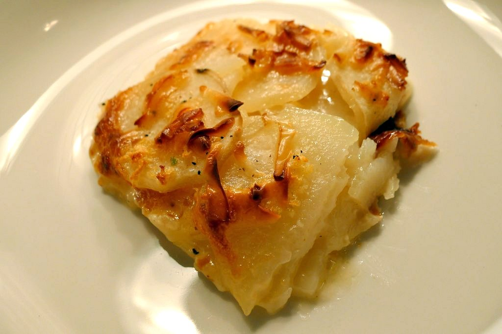

Home
Scallop Potatoes

Description
A tasty dish of cheesy scalloped potatoes
Ingredients
- 4 Cups Thinly Sliced Potatoes
- 3 Tablespoons Butter
- 3 Tablespoons Flour
- 1 1/2 Cups Milk
- 1 tsp Salt
- 1 Dash Cayenne Pepper
- 1 Cup Grated Cheddar Cheese
- 1/2 Cup Grated Cheddar Cheese for topping
- Paprika for color
Directions
- Preheat oven to 350F
- In a small saucepan, melt butter and blend in flour
- Let sit for a minute
- Add all of cold milk, stirring with a whisk
- Season with salt and cayenne
- Cook sauce on low until smooth and boiling, stirring occasionally with a whisk
- Reduce heat and stir in cheese
- Place half of the sliced potatoes in a lightly greased one quart casserole dish
- Pour half of the cheese sauce over the potatoes
- Repeat with second layer of potatoes and cheese sauce
- Sprinkle remaining cheese on top
- Top with paprika for color
- Bake uncovered for about 1 hour at 350F